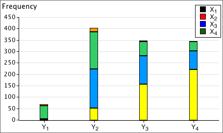
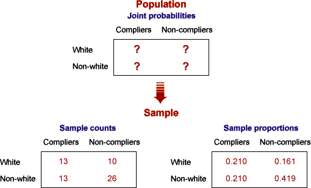

If you don't want to print now,
Bivariate data without an explanatory variable
In some bivariate categorical data sets, one variable can be treated as a response whose value depends on the other explanatory variable. The explanatory variable can then be used to split the individuals into groups.
In other bivariate data, the relationship between the variables is more symmetrical but we still want to discover whether particular values of one variable are associated with values of the other. A contingency table again summarises the data.
| Variable X | ||||
|---|---|---|---|---|
| Variable Y | X1 | X2 | X3 | |
| Y1 | 105 | 07 | 11 | |
| Y2 | 058 | 05 | 13 | |
| Y3 | 084 | 37 | 42 | |
| Y4 | 057 | 16 | 17 | |
Marginal counts
Although our main interest is usually on the relationship between two categorical variables, it can also be of interest to examine the overall distribution of each variable separately. These are called the marginal distributions of the two variables and are determined by the row and column totals of the contingency table.
| Variable X | ||||||
|---|---|---|---|---|---|---|
| Variable Y | X1 | X2 | X3 | X4 | Total | |
| Y1 | 002 | 003 | 057 | 06 | 68 | |
| Y2 | 052 | 170 | 163 | 17 | 402 | |
| Y3 | 156 | 125 | 061 | 06 | 348 | |
| Y4 | 220 | 083 | 039 | 04 | 346 | |
| Total | 430 | 381 | 320 | 33 | ||
The row and column totals correspond to the heights of the stacks in stacked bar charts. For example, the above row totals are the heights of the stacks in the following diagram.

Marginal proportions
In a similar way, the marginal proportions for the variables are obtained by adding the cell proportions across rows and down columns.
 and
and 
Spliting into groups
If the values of X are used to split the individuals into groups, the conditional distributions of Y given X are the distributions within each of these groups. They are found by dividing the cell counts by the totals for each such group. The columns of the table below show the conditional distributions for a contingency table, expressed as percentages.
| Variable X | |||||
|---|---|---|---|---|---|
| Variable Y | X1 | X2 | X3 | X4 | |
| Y1 | 000.5 | 000.8 | 017.8 | 018.2 | |
| Y2 | 012.1 | 044.6 | 050.9 | 051.5 | |
| Y3 | 036.3 | 032.8 | 019.1 | 018.2 | |
| Y4 | 051.2 | 021.8 | 012.2 | 012.1 | |
| Total | 100.0 | 100.0 | 100.0 | 100.0 | |
The conditional distributions of X given Y are similarly found by using Y to create the groups of individuals. They are found by dividing the cell counts by the totals in the other margin of the original contingency table.
| Variable X | ||||||
|---|---|---|---|---|---|---|
| Variable Y | X1 | X2 | X3 | X4 | Total | |
| Y1 | 02.9 | 04.4 | 83.8 | 8.8 | 100.0 | |
| Y2 | 12.9 | 42.3 | 40.5 | 4.2 | 100.0 | |
| Y3 | 44.8 | 35.9 | 17.5 | 1.7 | 100.0 | |
| Y4 | 63.6 | 24.0 | 11.3 | 1.2 | 100.0 | |
Both tables of conditional proportions (or percentages) are often informative.
Conditional and marginal distributions
The distinction is between the marginal distribution for a variable and its conditional distributions is illustrated for the following contingency table that describes bruising of 96 apples in a packing plant.
| OK | Bruised | |
|---|---|---|
| Granny Smith | 40 | 8 |
| Fuji | 24 | 24 |
The diagram below shows the apples, arranged in rows by variety.

Observe that:
The apples can be rearranged as follows:

Now observe that:
Exercises are only available online.
Data sets with two categorical variables
Bivariate categorical data sets are usually summarised with a contingency table.
For example, a study examined 62 patients who had been given a prescription medicine for some condition. Each patient was classified by whether they had complied with the treatment prescribed and by racial group:
| Race | Compliers | Non-compliers | Total |
|---|---|---|---|
| White | 13 | 10 | 23 |
| Non-white | 13 | 26 | 39 |
| Total | 26 | 36 | 62 |
Joint probabilities
Bivariate categorical data can be modelled as a random sample from an underlying population of pairs of categorical values. The population proportion for each pair (x, y) is denoted by pxy and is called the joint probability for (x, y).
In games of chance, we can often work out the joint probabilities. For example, if a gambler draws a card from a shuffled deck and also tosses a coin, there are eight possible combinations,

Since these are equally likely,
phead, heart = phead, club = ... = ptail, spade = 1/8 = 0.125
Interest in the model
In practice, we usually only have a random sample (summarised by a contingency table) and do not know the underlying joint probabilities. The sample proportions however provide estimates.

Probabilities for a single variable
A model for two categorical variables is characterised by the joint probabilities pxy.
The marginal probability, px, for a variable X is the proportion of (x, y) pairs in the population with X = x . This can be found by adding all joint probabilities for pairs with this x-value.

There is a similar formula for the marginal probabilities of the other variable,

Example
In the following example, the marginal probabilities for X are the row of totals under the table, and the marginal probabilities for Y are the column of totals on the right.
| Variable X | ||||
|---|---|---|---|---|
| Variable Y | X = A | X = B | X = C | Total |
| Y = 1 | 0.2576 | 0.1364 | 0.1212 | 0.5152 |
| Y = 2 | 0.0909 | 0.0758 | 0.0152 | 0.1818 |
| Y = 3 | 0.0455 | 0.0758 | 0.0606 | 0.1818 |
| Y = 4 | 0.0152 | 0.0303 | 0.0758 | 0.1212 |
| Total | 0.4091 | 0.3182 | 0.2727 | 1.0000 |
Probabilities in a sub-population
Conditional probabilities for Y, given X = x
The general definition of the conditional probabilities for Y given that the value of X is x is
They can be found by rescaling of that row of the table of joint probabilities (dividing by px) so that the row sums to 1.0.

Two sets of conditional probabilities
Conditional probabilities for X given that Y has the value y are defined in a similar way:

You should be careful to distinguish between px | y and py | x.
| The probability of being pregnant, given that a randomly selected person is female would be fairly small. The probability of being female, given that a person is pregnant is 1.0 !! |
Proportional Venn diagrams
A proportional Venn diagram is drawn from the marginal probabilities of one variable and the conditional probabilities for the other variable,

Rewriting the definition of conditional probabilities,

The area of any rectangle in the diagram therefore equals the joint probability of the categories it represents.
An alternative proportional Venn diagram can be drawn from the marginal probabilities of Y and the conditional probabilites of X given Y. The area for the rectangle corresponding to any (x, y) is its joint probability, pxy.
Example
The table below is based on the world population in 2002, categorised by region and by age group. It shows the joint probabilities for a randomly chosen person being in each age/region category.
| Age | |||
|---|---|---|---|
| 0-19 | 20-64 | 65+ | |
| Africa and Near East | 0.085 | 0.073 | 0.006 |
| Asia | 0.215 | 0.315 | 0.035 |
| America, Europe and Oceanea | 0.084 | 0.158 | 0.030 |
The two proportional Venn diagrams are shown below.

Note that the areas are the same in both diagrams — they are simply rearranged.
Exercises are only available online.
Exercises are only available online.
Tree diagrams for two attributes
Two categorical variables (or types of event) are sometimes represented in a type of diagram called a tree diagram. The main branches are labeled with their marginal probabilities. The branches to the right are labeled with their conditional probabilities, conditional on the branches to the left leading to that fork.
Joint probabilities can be easily found by multiplying the probabilities down the corresponding branches. This corresponds to applying the general multiplication rule, P(A and B) = P(A) × P(B | A).

Sampling without replacement
Consider selection of two students from a class of 2 women and 4 men by "pulling names out of a hat". The following tree diagram illustrates this process.

Note that the conditional probability of the second student being male depends on whether the first student is male (top branch) or female (third branch). The diagram also shows the joint probabilities on the right and these allows us to determine the probability that one student of each gender is selected.
P(one man and one woman) = P(MW) + P(WM)
= 8/30 + 8/30 = 8/15
Tree diagrams for other random situations
Tree diagrams can be used for any situation involving a sequence of events. Each possible sequence of events is represented by a path through the tree diagram. Branches are labeled with the probability for the branching conditional on the branches to the left.
The joint probability for any sequence of events is again found by multiplying the probabilities on all branches of the tree corresponding to this sequence.
Boys and girls in a family
A family want at least two children and no more than four, but will stop having children when they get a boy. Assuming that P(male) = 0.5, independent of the genders of previous children, the possible sequences of births is:

All branches have conditional probability 1/2 so they are not displayed. The joint probabilities at the end of the branches are found by multiplying these 1/2's together. We can find various probabilities by adding these probabilities.
| Family size, x | 2 | 3 | 4 |
|---|---|---|---|
| P(X = x) | 0.75 | 0.125 | 0.125 |
| Number of girls, y | 0 | 1 | 2 | 3 | 4 |
|---|---|---|---|---|---|
| P(Y = y) | 0.25 | 0.5 | 0.125 | 0.0625 | 0.0625 |
Relative frequency
When all histogram classes are of equal width, histograms are often drawn with a vertical axis giving the frequencies (counts) for each class. The vertical axis can alternatively be labelled with the relative frequencies (proportions) for the classes.
(There is no harm in including both axes.)

Area equals relative frequency
An important property of histograms is that the proportion of values in one or more classes equals the proportion of the histogram area above these classes.

Therefore,
Relative frequency = proportion of the total area
Mixed class widths
For some data sets, wider classes give a smoother histogram in some ranges of values (e.g. in the tail of a distribution) and narrower classes are better in other parts of the distribution (usually where there is greater density of values).
In a correctly drawn histogram, each value contributes the same area.
Histograms can be drawn with mixed class widths, but it would be badly misleading to make the rectangle heights equal to either the class frequency or relative frequency.

Area and proportion of values
The details of drawing histograms by hand with varying class widths are unimportant — a computer should be used. To interpret their shape remember that
The proportion of the total area above any classes equals the proportion of values in them.
For example,

Exercises are only available online.
Exercises are only available online.
Relative frequency
When all histogram classes are of equal width, histograms are often drawn with a vertical axis giving the frequencies (counts) for each class. The vertical axis can alternatively be labelled with the relative frequencies (proportions) for the classes.
(There is no harm in including both axes.)
Area equals relative frequency
An important property of histograms is that the proportion of values in one or more classes equals the proportion of the histogram area above these classes.
Therefore,
Relative frequency = proportion of the total area
Histograms and probability density functions
The situation is a little more complicated for continuous numerical populations and samples. A standard histogram could be used to describe the population in the same way that it might be used for a sample:

However with an infinite population, we can narrow the histogram classes beyond what would be reasonable for a finite sample. Indeed, class widths can be reduced indefinitely, resulting in a smooth histogram called a probability density function. This is often abbreviated to a pdf.

Probability density functions are still essentially histograms and share all properties of histograms.
Shape of a probability density function
A probability density function is usually a fairly smooth curve, though a single sample histogram provides limited information about its likely shape.

Normal distributions
One flexible group of continuous probability density functions is the family of normal distributions. Normal distributions:
Changing the parameters µ and σ changes where the distribution is centred and its spread, but its shape remains otherwise the same.
The parameters are often estimated from a sample. Details will be given later, but the resulting normal pdf will be close in shape to a histogram of the sample data.

Probabilities from a histogram
In the histogram of any finite sample or population, the area above any class is the proportion of values in the class.

Probabilities from a probability density function
Since a probability density function (pdf) is a type of histogram, it satisfies the same property.
The probability that a sampled value is within two values, P(a < X < b), equals the area under the pdf.
This is the key to interpreting pdfs.

Exercises are only available online.
Normal distribution parameters
The family of normal distributions consists of symmetric bell-shaped distributions that are defined by two parameters, µ and σ, the distribution's mean and standard deviation.
Normal distributions as models for data
The sample data rarely gives enough information for us to be sure that the underlying population is normal, but a normal model is often used unless there is obvious non-normality in the data.
Even if the sample data are obviously skew, a normal distribution may be a reasonable model for a nonlinear transformation of the values (e.g. a log transformation).
Distribution of summary statistics
A more important reason for the importance of the normal distribution in statistics is that...
Many summary statistics have normal distributions (at least approximately).
The Central Limit Theorem shows that the mean of a random sample has a distribution that is close to normal when the sample size is moderate or large, irrespective of the shape of the distribution of the individual values. The following are also approximately normal when the sample size is moderate or large...
Effect of normal parameters on distribution
Distributions from the normal family have different locations and spreads, but other aspects of their shape are the same. Indeed, if the scales on the horizontal and vertical axes are suitably chosen, ...

A common diagram for all normal distributions
All normal distributions have basically the same shape.
This should allow you to sketch a normal distribution, given any values of µ and σ.

Some probabilities for normal distributions

A more precise version of the middle probability is
70-95-100 rule of thumb and the normal distribution
These probabilities are the basis of the 70-95-100 rule of thumb for 'bell-shaped' data sets.
Exercises are only available online.
Exercises are only available online.
Z-scores
The standardised form of a variable X is found by subtracting its mean then dividing by its standard deviation,
standardised value, 
The resulting values are called z-scores and are the same, whatever the units in which X was originally recorded.
Properties of z-scores
A standardised variable always has zero mean and standard deviation one.

From the 70-95-100 rule-of-thumb,
An individual's z-score tells you how many standard deviations it is above the mean. From its value, you can tell whether the value is very high (say over +2) or low (say under -2) in relation to the other values of the variable.
Standard deviations from the mean
Any x-value can be expressed as a number of standard deviations from the mean — its z-score.

Mathematically,

or equivalently,
x = μ + z × σ
Probabilities and z-scores
Any probability (area) relating to a normally distributed random variable, X, can be expressed in terms of z-scores:

Note in particular that:
Distribution of z-scores
Calculating a z-score from a value, x, is called standardising it.
standardised value, 
If X has a normal distribution, then Z has a standard normal distribution with mean µ = 0 and standard deviation σ = 1.
Probabilities for the standard normal distribution
After translating a probability about X into one about a z-score, it is easier to evaluate it.

Areas under the standard normal curve can be evaluated in Excel and most statistical programs. Statistical tables can also be used (see later).
Evaluating other probabilities
Other probabilities about normal distributions can be found using the following properties:
Probability of higher value

Probability of value between two others

In both cases, the conversion can be done either before or after translating the required probability from x-values to z-scores.
Standard normal probabilities without a computer
Probabilities about z-scores can be found without a computer. Most introductory statistics textbooks contain printed tables with left-tail probabilities for the standard normal distribution.

These tables can be used after the required probability has been translated into a problem relating to the standard normal distribution.
Finding an x-value from a probability
Finding quantiles
To find the x-value for which there is probability p of a normal distribution being lower,
The first step of this process can be done with Excel (or other statistical software) or statistical tables can be used. For example, the diagram below shows how to find the z-score such that there is probability 0.9 of being less.

Translating from a z-score to the corresponding x-value is done with the formula,
x = μ + z σ
Exercises are only available online.
Exercises are only available online.
Exercises are only available online.
Exercises are only available online.